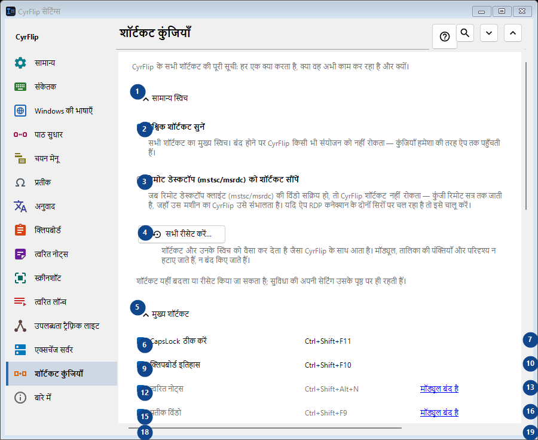
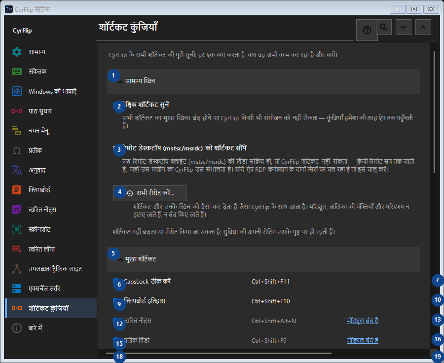

शॉर्टकट कुंजियाँ
इसका उपयोग
CyrFlip के सभी शॉर्टकट की पूरी सूची: हर एक क्या करता है, क्या वह अभी काम कर रहा है और क्यों।


उपयोग का क्रम
सेटिंग तुरंत लागू होती हैं। कोई अनिवार्य क्रम नहीं है; नीचे दिए समूहों का उपयोग करें।
तत्व
1. सामान्य स्विच
बताई गई कार्रवाई के लिए इस आदेश का उपयोग करें। स्वीकार करने से पहले पुष्टि पढ़ें।
आपके शॉर्टकट2. वैश्विक शॉर्टकट सुनें
सभी शॉर्टकट का मुख्य स्विच। बंद होने पर CyrFlip किसी भी संयोजन को नहीं रोकता — कुंजियाँ हमेशा की तरह ऐप तक पहुँचती हैं।
आपके शॉर्टकट3. रिमोट डेस्कटॉप (mstsc/msrdc) को शॉर्टकट सौंपें
जब रिमोट डेस्कटॉप क्लाइंट (mstsc/msrdc) की विंडो सक्रिय हो, तो CyrFlip शॉर्टकट नहीं रोकता — कुंजी रिमोट सत्र तक जाती है, जहाँ उस मशीन का CyrFlip उसे संभालता है। यदि ऐप RDP कनेक्शन के दोनों सिरों पर चल रहा है तो इसे चालू करें।
आपके शॉर्टकट4. सभी रीसेट करें...
शॉर्टकट और उनके स्विच को वैसा कर देता है जैसा CyrFlip के साथ आता है। मॉड्यूल, तालिका की पंक्तियाँ और परिदृश्य न हटाए जाते हैं, न बंद किए जाते हैं।
आपके शॉर्टकट5. मुख्य शॉर्टकट
बताई गई कार्रवाई के लिए इस आदेश का उपयोग करें। स्वीकार करने से पहले पुष्टि पढ़ें।
आपके शॉर्टकट6. CapsLock ठीक करें Ctrl+Shift+F11
बताई गई कार्रवाई के लिए इस आदेश का उपयोग करें। स्वीकार करने से पहले पुष्टि पढ़ें।
आपके शॉर्टकट7. बदलें... - CapsLock ठीक करें Ctrl+Shift+F11
बताई गई कार्रवाई के लिए इस आदेश का उपयोग करें। स्वीकार करने से पहले पुष्टि पढ़ें।
आपके शॉर्टकट8. डिफ़ॉल्ट बनाएँ - CapsLock ठीक करें Ctrl+Shift+F11
बताई गई कार्रवाई के लिए इस आदेश का उपयोग करें। स्वीकार करने से पहले पुष्टि पढ़ें। यह तत्व अभी उपलब्ध नहीं है। पहले सुविधा चालू करें या कोई प्रविष्टि चुनें।
आपके शॉर्टकट9. क्लिपबोर्ड इतिहास Ctrl+Shift+F10
बताई गई कार्रवाई के लिए इस आदेश का उपयोग करें। स्वीकार करने से पहले पुष्टि पढ़ें।
आपके शॉर्टकट10. बदलें... - क्लिपबोर्ड इतिहास Ctrl+Shift+F10
बताई गई कार्रवाई के लिए इस आदेश का उपयोग करें। स्वीकार करने से पहले पुष्टि पढ़ें।
आपके शॉर्टकट11. डिफ़ॉल्ट बनाएँ - क्लिपबोर्ड इतिहास Ctrl+Shift+F10
बताई गई कार्रवाई के लिए इस आदेश का उपयोग करें। स्वीकार करने से पहले पुष्टि पढ़ें। यह तत्व अभी उपलब्ध नहीं है। पहले सुविधा चालू करें या कोई प्रविष्टि चुनें।
आपके शॉर्टकट12. त्वरित नोट्स Ctrl+Shift+Alt+N
बताई गई कार्रवाई के लिए इस आदेश का उपयोग करें। स्वीकार करने से पहले पुष्टि पढ़ें।
आपके शॉर्टकट13. बदलें... - त्वरित नोट्स Ctrl+Shift+Alt+N
बताई गई कार्रवाई के लिए इस आदेश का उपयोग करें। स्वीकार करने से पहले पुष्टि पढ़ें।
आपके शॉर्टकट14. डिफ़ॉल्ट बनाएँ - त्वरित नोट्स Ctrl+Shift+Alt+N
बताई गई कार्रवाई के लिए इस आदेश का उपयोग करें। स्वीकार करने से पहले पुष्टि पढ़ें। यह तत्व अभी उपलब्ध नहीं है। पहले सुविधा चालू करें या कोई प्रविष्टि चुनें।
आपके शॉर्टकट15. प्रतीक विंडो Ctrl+Shift+F9
बताई गई कार्रवाई के लिए इस आदेश का उपयोग करें। स्वीकार करने से पहले पुष्टि पढ़ें।
आपके शॉर्टकट16. बदलें... - प्रतीक विंडो Ctrl+Shift+F9
बताई गई कार्रवाई के लिए इस आदेश का उपयोग करें। स्वीकार करने से पहले पुष्टि पढ़ें।
आपके शॉर्टकट17. डिफ़ॉल्ट बनाएँ - प्रतीक विंडो Ctrl+Shift+F9
बताई गई कार्रवाई के लिए इस आदेश का उपयोग करें। स्वीकार करने से पहले पुष्टि पढ़ें। यह तत्व अभी उपलब्ध नहीं है। पहले सुविधा चालू करें या कोई प्रविष्टि चुनें।
आपके शॉर्टकट18. उपलब्धता ट्रैफ़िक लाइट Ctrl+Shift+Alt+T
बताई गई कार्रवाई के लिए इस आदेश का उपयोग करें। स्वीकार करने से पहले पुष्टि पढ़ें।
आपके शॉर्टकट19. बदलें... - उपलब्धता ट्रैफ़िक लाइट Ctrl+Shift+Alt+T
बताई गई कार्रवाई के लिए इस आदेश का उपयोग करें। स्वीकार करने से पहले पुष्टि पढ़ें।
आपके शॉर्टकट20. डिफ़ॉल्ट बनाएँ - उपलब्धता ट्रैफ़िक लाइट Ctrl+Shift+Alt+T
बताई गई कार्रवाई के लिए इस आदेश का उपयोग करें। स्वीकार करने से पहले पुष्टि पढ़ें। यह तत्व अभी उपलब्ध नहीं है। पहले सुविधा चालू करें या कोई प्रविष्टि चुनें।
आपके शॉर्टकट21. स्क्रीन के हिस्से का स्क्रीनशॉट Ctrl+F12
बताई गई कार्रवाई के लिए इस आदेश का उपयोग करें। स्वीकार करने से पहले पुष्टि पढ़ें।
आपके शॉर्टकट22. बदलें... - स्क्रीन के हिस्से का स्क्रीनशॉट Ctrl+F12
बताई गई कार्रवाई के लिए इस आदेश का उपयोग करें। स्वीकार करने से पहले पुष्टि पढ़ें।
आपके शॉर्टकट23. डिफ़ॉल्ट बनाएँ - स्क्रीन के हिस्से का स्क्रीनशॉट Ctrl+F12
बताई गई कार्रवाई के लिए इस आदेश का उपयोग करें। स्वीकार करने से पहले पुष्टि पढ़ें। यह तत्व अभी उपलब्ध नहीं है। पहले सुविधा चालू करें या कोई प्रविष्टि चुनें।
आपके शॉर्टकट24. पूरी स्क्रीन का स्क्रीनशॉट Ctrl+F11
बताई गई कार्रवाई के लिए इस आदेश का उपयोग करें। स्वीकार करने से पहले पुष्टि पढ़ें।
आपके शॉर्टकट25. बदलें... - पूरी स्क्रीन का स्क्रीनशॉट Ctrl+F11
बताई गई कार्रवाई के लिए इस आदेश का उपयोग करें। स्वीकार करने से पहले पुष्टि पढ़ें।
आपके शॉर्टकट26. डिफ़ॉल्ट बनाएँ - पूरी स्क्रीन का स्क्रीनशॉट Ctrl+F11
बताई गई कार्रवाई के लिए इस आदेश का उपयोग करें। स्वीकार करने से पहले पुष्टि पढ़ें। यह तत्व अभी उपलब्ध नहीं है। पहले सुविधा चालू करें या कोई प्रविष्टि चुनें।
आपके शॉर्टकट27. चित्र बनाने के साथ हिस्से का स्क्रीनशॉट Ctrl+Alt+F12
बताई गई कार्रवाई के लिए इस आदेश का उपयोग करें। स्वीकार करने से पहले पुष्टि पढ़ें।
आपके शॉर्टकट28. बदलें... - चित्र बनाने के साथ हिस्से का स्क्रीनशॉट Ctrl+Alt+F12
बताई गई कार्रवाई के लिए इस आदेश का उपयोग करें। स्वीकार करने से पहले पुष्टि पढ़ें।
आपके शॉर्टकट29. डिफ़ॉल्ट बनाएँ - चित्र बनाने के साथ हिस्से का स्क्रीनशॉट Ctrl+Alt+F12
बताई गई कार्रवाई के लिए इस आदेश का उपयोग करें। स्वीकार करने से पहले पुष्टि पढ़ें। यह तत्व अभी उपलब्ध नहीं है। पहले सुविधा चालू करें या कोई प्रविष्टि चुनें।
आपके शॉर्टकट30. चित्र बनाने के साथ पूरी स्क्रीन का स्क्रीनशॉट Ctrl+Alt+F11
बताई गई कार्रवाई के लिए इस आदेश का उपयोग करें। स्वीकार करने से पहले पुष्टि पढ़ें।
आपके शॉर्टकट31. बदलें... - चित्र बनाने के साथ पूरी स्क्रीन का स्क्रीनशॉट Ctrl+Alt+F11
बताई गई कार्रवाई के लिए इस आदेश का उपयोग करें। स्वीकार करने से पहले पुष्टि पढ़ें।
आपके शॉर्टकट32. डिफ़ॉल्ट बनाएँ - चित्र बनाने के साथ पूरी स्क्रीन का स्क्रीनशॉट Ctrl+Alt+F11
बताई गई कार्रवाई के लिए इस आदेश का उपयोग करें। स्वीकार करने से पहले पुष्टि पढ़ें। यह तत्व अभी उपलब्ध नहीं है। पहले सुविधा चालू करें या कोई प्रविष्टि चुनें।
आपके शॉर्टकट33. स्क्रीनशॉट फ़ोल्डर खोलें Ctrl+F10
बताई गई कार्रवाई के लिए इस आदेश का उपयोग करें। स्वीकार करने से पहले पुष्टि पढ़ें।
आपके शॉर्टकट34. बदलें... - स्क्रीनशॉट फ़ोल्डर खोलें Ctrl+F10
बताई गई कार्रवाई के लिए इस आदेश का उपयोग करें। स्वीकार करने से पहले पुष्टि पढ़ें।
आपके शॉर्टकट35. डिफ़ॉल्ट बनाएँ - स्क्रीनशॉट फ़ोल्डर खोलें Ctrl+F10
बताई गई कार्रवाई के लिए इस आदेश का उपयोग करें। स्वीकार करने से पहले पुष्टि पढ़ें। यह तत्व अभी उपलब्ध नहीं है। पहले सुविधा चालू करें या कोई प्रविष्टि चुनें।
आपके शॉर्टकट36. कीबोर्ड से मेनू खोलें Ctrl+Shift+Alt+M
बताई गई कार्रवाई के लिए इस आदेश का उपयोग करें। स्वीकार करने से पहले पुष्टि पढ़ें।
आपके शॉर्टकट37. बदलें... - कीबोर्ड से मेनू खोलें Ctrl+Shift+Alt+M
बताई गई कार्रवाई के लिए इस आदेश का उपयोग करें। स्वीकार करने से पहले पुष्टि पढ़ें।
आपके शॉर्टकट38. डिफ़ॉल्ट बनाएँ - कीबोर्ड से मेनू खोलें Ctrl+Shift+Alt+M
बताई गई कार्रवाई के लिए इस आदेश का उपयोग करें। स्वीकार करने से पहले पुष्टि पढ़ें। यह तत्व अभी उपलब्ध नहीं है। पहले सुविधा चालू करें या कोई प्रविष्टि चुनें।
आपके शॉर्टकट39. क्लिपबोर्ड को सर्वर पर भेजें
बताई गई कार्रवाई के लिए इस आदेश का उपयोग करें। स्वीकार करने से पहले पुष्टि पढ़ें।
आपके शॉर्टकट40. बदलें... - क्लिपबोर्ड को सर्वर पर भेजें
बताई गई कार्रवाई के लिए इस आदेश का उपयोग करें। स्वीकार करने से पहले पुष्टि पढ़ें।
आपके शॉर्टकट41. डिफ़ॉल्ट बनाएँ - क्लिपबोर्ड को सर्वर पर भेजें
बताई गई कार्रवाई के लिए इस आदेश का उपयोग करें। स्वीकार करने से पहले पुष्टि पढ़ें। यह तत्व अभी उपलब्ध नहीं है। पहले सुविधा चालू करें या कोई प्रविष्टि चुनें।
आपके शॉर्टकट42. सर्वर से क्लिपबोर्ड प्राप्त करें
बताई गई कार्रवाई के लिए इस आदेश का उपयोग करें। स्वीकार करने से पहले पुष्टि पढ़ें।
आपके शॉर्टकट43. बदलें... - सर्वर से क्लिपबोर्ड प्राप्त करें
बताई गई कार्रवाई के लिए इस आदेश का उपयोग करें। स्वीकार करने से पहले पुष्टि पढ़ें।
आपके शॉर्टकट44. डिफ़ॉल्ट बनाएँ - सर्वर से क्लिपबोर्ड प्राप्त करें
बताई गई कार्रवाई के लिए इस आदेश का उपयोग करें। स्वीकार करने से पहले पुष्टि पढ़ें। यह तत्व अभी उपलब्ध नहीं है। पहले सुविधा चालू करें या कोई प्रविष्टि चुनें।
आपके शॉर्टकट45. माउस
बताई गई कार्रवाई के लिए इस आदेश का उपयोग करें। स्वीकार करने से पहले पुष्टि पढ़ें।
आपके शॉर्टकट46. बदलें... - चयन के ऊपर मेनू Ctrl + दायाँ माउस बटन
बताई गई कार्रवाई के लिए इस आदेश का उपयोग करें। स्वीकार करने से पहले पुष्टि पढ़ें।
आपके शॉर्टकट47. डिफ़ॉल्ट बनाएँ - चयन के ऊपर मेनू Ctrl + दायाँ माउस बटन
बताई गई कार्रवाई के लिए इस आदेश का उपयोग करें। स्वीकार करने से पहले पुष्टि पढ़ें। यह तत्व अभी उपलब्ध नहीं है। पहले सुविधा चालू करें या कोई प्रविष्टि चुनें।
आपके शॉर्टकट48. लेआउट रूपांतरण
बताई गई कार्रवाई के लिए इस आदेश का उपयोग करें। स्वीकार करने से पहले पुष्टि पढ़ें।
आपके शॉर्टकट49. अनुवाद
बताई गई कार्रवाई के लिए इस आदेश का उपयोग करें। स्वीकार करने से पहले पुष्टि पढ़ें।
आपके शॉर्टकट50. त्वरित लॉन्च
बताई गई कार्रवाई के लिए इस आदेश का उपयोग करें। स्वीकार करने से पहले पुष्टि पढ़ें।
आपके शॉर्टकट51. Windows
बताई गई कार्रवाई के लिए इस आदेश का उपयोग करें। स्वीकार करने से पहले पुष्टि पढ़ें।
आपके शॉर्टकट